S5 · Checklist 100 %
Collectibles et 100 %
Trois systèmes, deux seuils et un seul point manquable. Suivez vos jalons dans une checklist persistante, sans compte et sans serveur.
PRESSE · 18/11
Comment le 100 % est réellement construit
Trois systèmes se superposent, et c'est ce qui perd les joueurs : les challenges (80), les séries de cartes (18) et la base de progression interne (environ 3 000 entrées). Comprendre lequel demande quoi évite de farmer au mauvais endroit.
80 challenges
8 catégories de 10. 50 terminés donnent un trophée, 70 sont exigés pour le 100 %. TRO-29
18 séries · 480 cartes
3 séries complètes = trophée. 15 séries complètes = 100 % et « A Long Road ». TRO-31
≈ 3 000 entrées
Véhicules, animaux, armes, braquages : la base du Menu Carte → Progression. TRO-30
La bonne nouvelle — la checklist 100 % n'apparaît qu'après l'histoire, mais tout ce que vous faites pendant l'histoire est déjà compté. Jouer normalement ne fait rien perdre.
TRO-32
OUTIL DU SITE
Votre checklist, sauvegardée sur cet appareil
Seize jalons, filtrés par catégorie, avec une barre de progression. Tout est conservé dans le stockage local de votre navigateur : rien ne part sur un serveur, rien ne demande de compte. Le compteur repart de zéro si vous videz les données du site — c'est le seul prix de la confidentialité.
0 / 16 validés · 0 %
- Terminer l’histoire principale
TRO-19 - Terminer les rencontres « Strangers & Freaks »
TRO-23 - Terminer les hobbies et passe-temps
TRO-23 - Déclencher les événements aléatoires
TRO-23 - Compléter 3 séries de cartes (trophée)
TRO-31 - Compléter 15 séries de cartes (100 %)
TRO-31 - Terminer 50 challenges sur 80
TRO-29 - Terminer 70 challenges sur 80 (100 %)
TRO-29 - Renseigner la base de progression (~3 000 entrées)
TRO-30 - Repérer les véhicules uniques du menu Progression
TRO-30 - Photographier les espèces rares et légendaires
MAP-21 - Débloquer toutes les armes du catalogue
TRO-30 - Terminer les braquages recensés
TRO-30 - Faire la méditation du chapitre 1 (seul manquable)
TRO-23 - Ouvrir la checklist 100 % après l’histoire
TRO-32 - Obtenir « A Long Road » et le platine
TRO-18
Aucun jalon dans cette catégorie.
Ce que cette checklist n'est pas — ce n'est pas la liste officielle des exigences du 100 %. Les seuils (70 challenges sur 80, 15 séries sur 18) viennent des guides post-embargo datés du 18/11 ; le détail exhaustif des catégories sera établi en jouant.
TRO-29
PRESSE · 18/11
Les six familles de contenu
| Famille | Jalons suivis ici | Statut du détail |
|---|---|---|
| Histoire | 2 | — |
| Activités | 3 | — |
| Collectibles | 3 | — |
| Défis | 2 | — |
| Véhicules & animaux | 2 | — |
| Divers | 4 | — |
Les compteurs exacts par famille (nombre de véhicules à repérer, d'animaux à photographier, de braquages à terminer) relèvent de la base de progression interne, qui se remplit en jouant. Les annoncer aujourd'hui serait inventer. TRO-30
PRESSE · 18/11
Les 18 séries de cartes, mathématiquement
480 cartes réparties en 18 séries, ce qui donne une moyenne de 26 à 27 cartes par série — la série des Flamingos de Vice City en compte 24. Deux seuils comptent : trois séries pour le trophée, quinze pour le 100 %. Autrement dit, il faut compléter 83 % des séries pour boucler la complétion. TRO-31
3 séries
« Don’t Touch My Deck » — le trophée, atteignable en quelques heures.
15 séries
Le vrai mur : le 100 % et « A Long Road ».
480 cartes
Objets physiques à ramasser dans le monde, pas des achats.
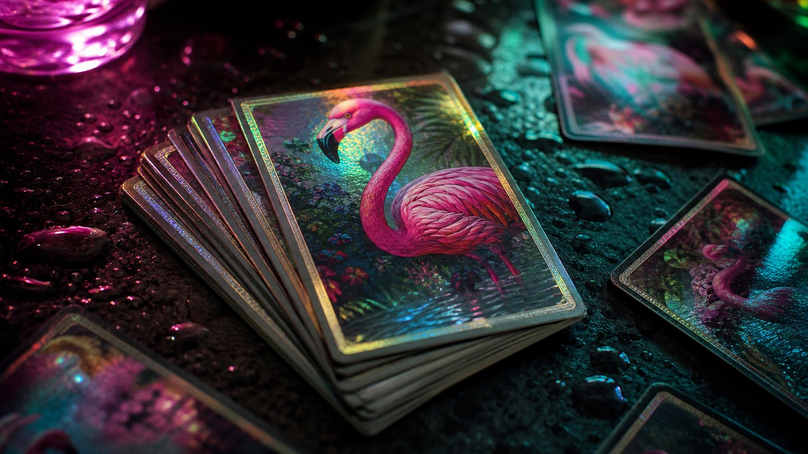
Ordre de ramassage conseillé
- Finir l'histoire d'abord : beaucoup de zones restent fermées ou risquées avant.
- Traiter les séries par région, pas par numéro : vous économisez les trajets.
- Viser 15 séries plutôt que 18 : les trois dernières coûtent plus de temps qu'elles ne rapportent.
- Garder les challenges « faciles » (course, saut, cascade) pour les sessions courtes.
SPOILER PRESSE · 18/11
Statuts de cette page
- OFFICIEL 18 séries de cartes et 480 cartes uniques.
- PRESSE · 18/11 Les trackers de fans se calent sur la sortie, pas avant.
- EN ATTENTE · 19/11 Le détail des catégories de challenges se remplit en jouant.
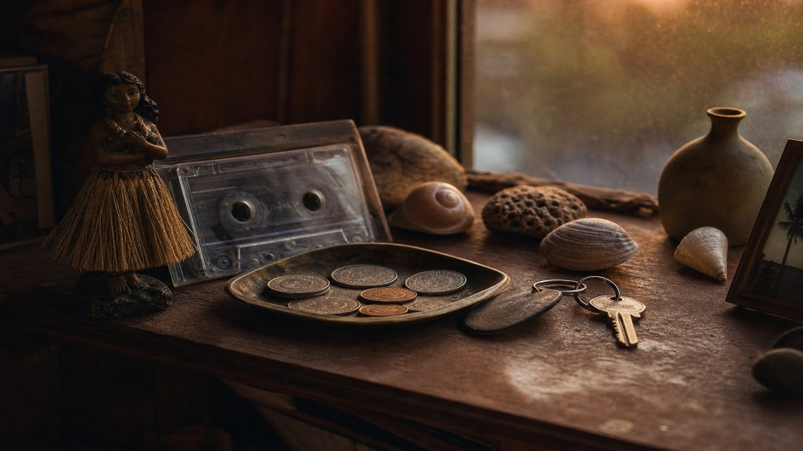
VISUEL DU JEU
La faune de Leonida, espèce par espèce
Leonida n'est pas un décor vide : 27 espèces sont déjà documentées, du lamantin des Grassrivers au requin-marteau des Keys. Chaque fiche porte son nom en jeu, pour la chasse photo et les défis animaliers. La faune compte dans la complétion, mais les compteurs exacts se remplissent en jouant.
Pourquoi les visuels sont petits. Les fiches d'espèces proviennent de la base communautaire GTABase, qui publie ces vignettes en 320 px de large : c'est la résolution maximale disponible aujourd'hui. Nous préférons un visuel fidèle en petit format à une illustration inventée.
Mammifères · 10 espèces
Ours noir
Vache
Cerf
Lamantin
Loutre
Opossum
Rat
Macaque rhésus
Mouffette
Chiens et animaux de compagnie · 4 espèces
Berger australien
Berger allemand
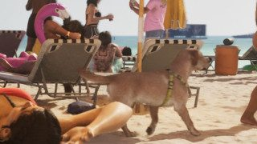
Labrador
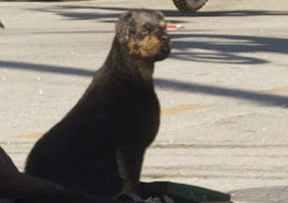
Rottweiler
Oiseaux · 4 espèces
Grue de Floride
Pigeon
Spatule rosée
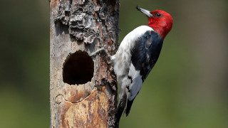
Pic
Reptiles et amphibiens · 4 espèces
Crapaud buffle
Grenouille
Tortue terrestre
Tortue marine
Vie marine · 5 espèces
Écrevisse
Méduse
Raie manta
Requin-marteau
Baleine
PRESSE · 18/11 Visuels extraits des fiches GTABase (gtabase.com/gta-6/animals), consultées le 18/11/2026. Base communautaire non officielle ; les noms d'espèces sont ceux du jeu, pas une nomenclature scientifique.
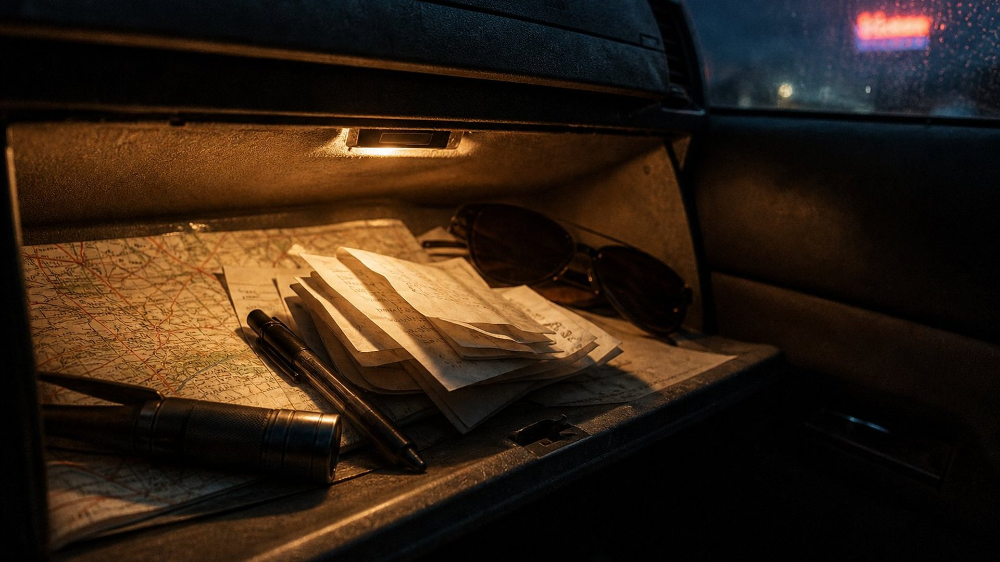
PRESSE · 19/11
Les vrais seuils du 100 % : presque rien n'est exigé en totalité
C'est l'erreur la plus coûteuse d'un guide de complétion : croire qu'il faut tout. Sur presque chaque catégorie, le jeu demande une partie seulement — et les seuils publiés par la presse sont précis au point de définir un itinéraire optimal.
| Catégorie | Exigé | Total existant |
|---|---|---|
| Séries de cartes | 15 | 18 (480 cartes) |
| Flamants de cocaïne | 100 | 125 |
| Scans WAiNK | 100 | — |
| Cascades | 300 | 397 |
| Défis | 70 | 80 |
| Véhicules de série | 200 | 277 |
| Armes standard | 50 | 66 |
| Espèces étudiées | 100 | 255 |
| Paniers de basket | 90 | 100 |
| Médailles d'or au stand de tir | 42 | 42 |
MIS-47Viser l'exhaustivité double le temps pour rien — la liste complète compte 29 checklists et 1 283 éléments ; le jeu n'en réclame qu'une partie par catégorie.MIS-48Le truc des méditations — 10 sites seulement, mais méditer avec Jason et avec Lucia au même endroit compte pour deux : 18 méditations possibles pour 15 exigées. Et une carte vendue à un prêteur reste dans la collection.MIS-49Stand de tir et drones — acheter d'abord l'autorisation à 5 $ au préposé. Les 42 médailles se jouent dans deux complexes ; les 42 essais de drone se répartissent sur 14 sites, le troisième essai d'un site s'ouvrant après le par des deux premiers.MIS-50Les trophées ne suivent pas le 100 % — 250 cascades pour « Cunning Stunts » contre 300 pour le 100 %, 50 défis pour « One Last Thing » contre 70. Faire le 100 % d'abord évite de refaire deux fois le même contenu.
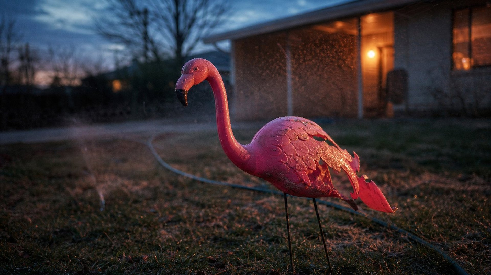
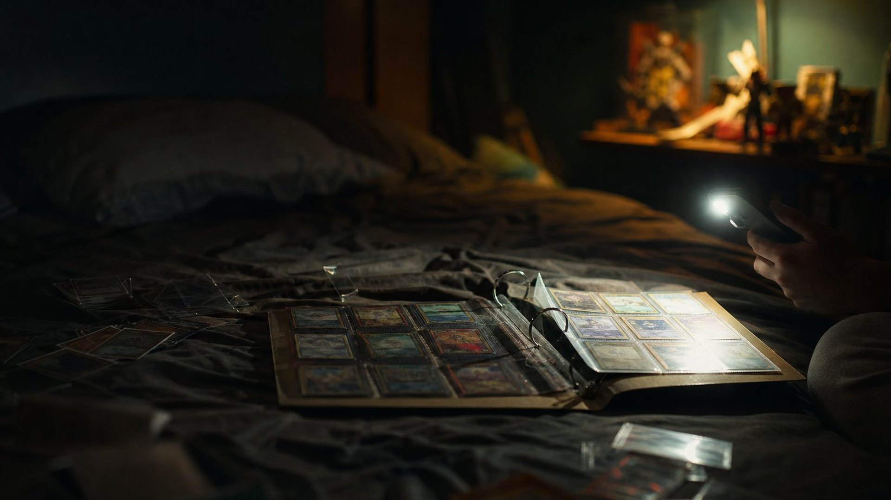
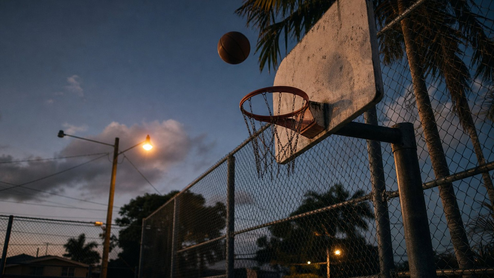
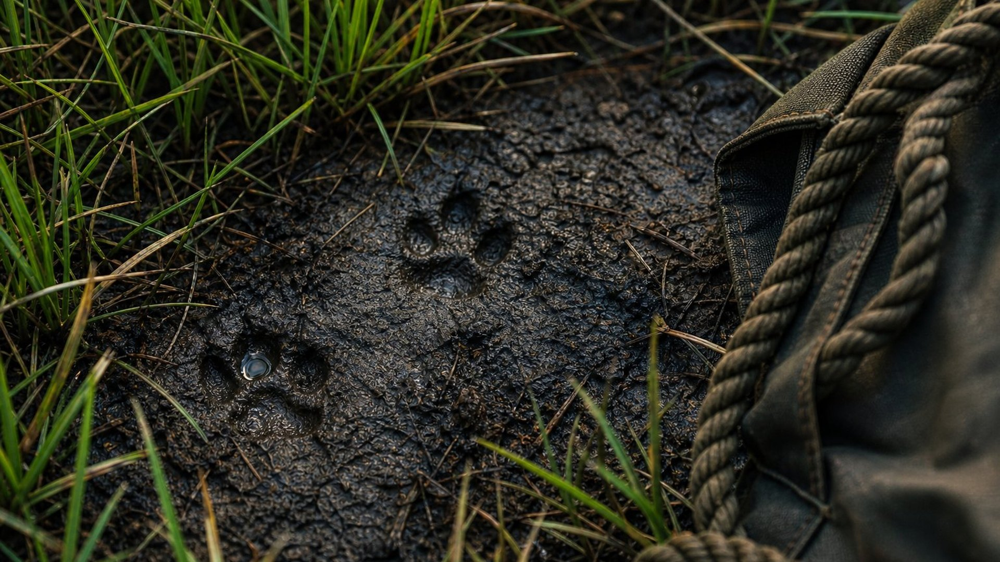
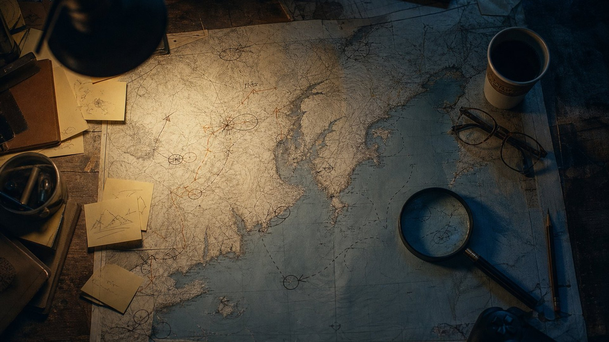